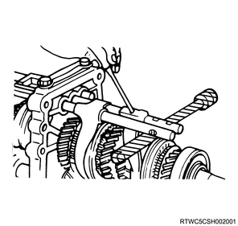
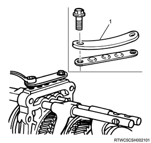

1. Install the reverse - 5th shift arm to the 5th synchronizer assembly.
Note
1. Install the reverse - 5th shift rod to the intermediate plate.
Note
Caution
2. Install the interlock pin to the intermediate plate.
Note
1. Install the 1st - 2nd shift arm to the gear assembly.
1. Install the 3rd - 4th shift arm to the gear assembly.
1. Install the interlock pin to the intermediate plate.
Caution
2. Install the 3rd - 4th shift rod to the intermediate plate.
Note
Caution

1. Install the interlock pin to the intermediate plate.
Caution
2. Install the 1st - 2nd shift rod to the intermediate plate.
Note
Caution
1. Install the spring to the inhibitor.
2. Install the detent ball to the intermediate plate.
Note
3. Install the detent spring to the intermediate plate.
Note
4. Install the detent spring plate to the intermediate plate.
Note
Tightening torque： 25 N・m { 2.5 kgf・m / 18 lb・ft }
